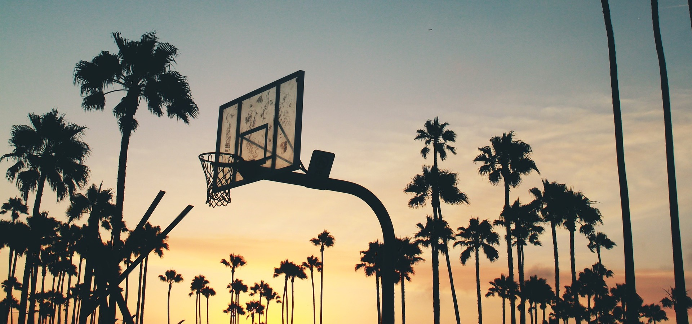

My Favorite Hobby: BasketballBasketball is a huge part of my life. I picked up the sport in elementary school and have been playing competitively ever since. Throughout middle school, I developed a close-knit group of teammates (and best friends), and we grew together as players and as a team. By the end of high school, we had won four state championships and were undefeated for three years in a row. It was incredibly rewarding to be part of such a hard-working and successful team and to leave a legacy for ourselves.
I was eventually recruited to play at the collegiate level, and being a part of a team was invaluable as I entered a new stage of my life. I joined an incredible community of athletes and made even more lifelong friends, while also challenging myself physically and mentally every day. Overall, I had a great undergraduate experience and am thankful that basketball led me in the direction it did.
I stopped playing about a year ago when my senior season ended. But after a much needed break, I'm eager to start playing again for fun. Just need to find a gym!